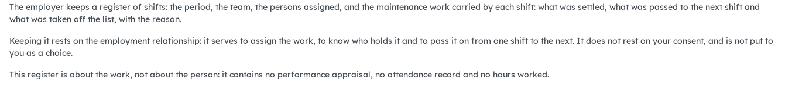

Version française plus bas.
A work shift names people and records what they did. That is personal information, and Québec's Act 25 makes no exception because those people are employees. This bridge declares the processing in the register of processing activities, with a plain-language summary. It installs itself when the operations module and the co-ownership privacy bridge are both present.

The plain-language summary of the work shift purpose, as entered in the register of processing activities.
Requires Properties: operations (bf_property_operations) and Co-ownership: privacy bridge (bf_property_privacy), which relies on Consent tracking (privacy_consent). Installs automatically.
Business Source License 1.1. You may use this module in production for your own internal business operations, which include administering immovables that you own or that you are constituted to administer, and letting a person acting on your behalf use your instance for that purpose. Administering immovables for the account of others, or providing the module to third parties as a product or service, whether hosted, managed or resold, requires a separate written agreement with the licensor. Each version converts to LGPL-3.0-or-later on the Change Date stated in the LICENSE file, which sets out the exact terms.
Un quart de travail nomme des personnes et enregistre ce qu'elles ont fait. Ce sont des renseignements personnels, et la Loi 25 ne fait pas d'exception parce que ces personnes sont des salariés. Ce pont déclare le traitement au registre des activités de traitement, avec un résumé en langage clair. Il s'installe de lui-même quand le module d'exploitation et le pont vie privée de la copropriété sont tous deux présents.
Le résumé en langage clair de la finalité des quarts de travail, tel qu'inscrit au registre des activités de traitement.
Exige Immeubles : exploitation (bf_property_operations) et Copropriété : pont vie privée (bf_property_privacy), qui s'appuie sur Suivi des consentements (privacy_consent). S'installe automatiquement.
Business Source License 1.1. Vous pouvez utiliser ce module en production pour vos propres activités internes, ce qui comprend l'administration des immeubles dont vous êtes propriétaire ou que vous êtes constitué pour administrer, et l'usage de votre instance à cette fin par une personne qui agit pour votre compte. Administrer des immeubles pour le compte d'autrui, ou fournir le module à des tiers comme produit ou service, hébergé, géré ou revendu, exige une entente écrite distincte avec le concédant. Chaque version passe sous LGPL-3.0 ou ultérieure à la date de changement inscrite au fichier LICENSE, qui fait foi.